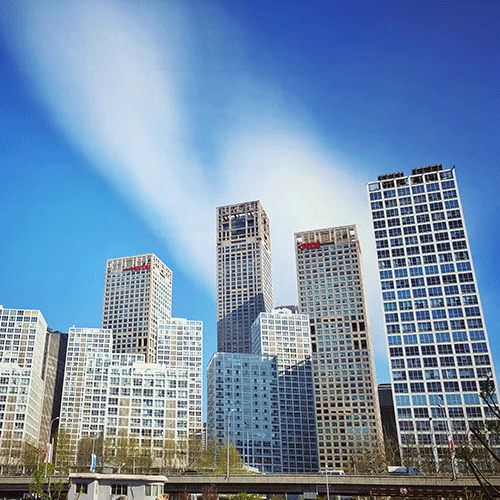
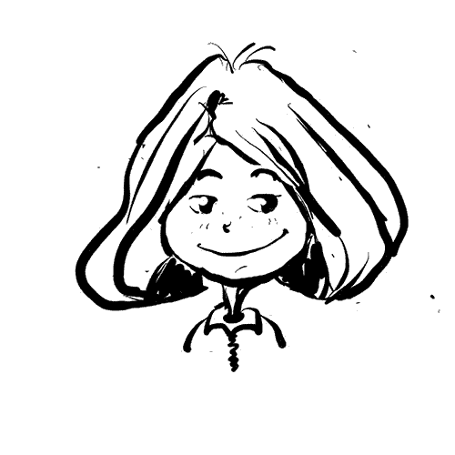

Re-Blue
ROAD. STATION. TRAVEL
Re-Blue/吾蓝. 这是一群在北京雾霾下成长的年轻人，为了找回当初那份美好，把Return Blue做为理想，他们坚定的创作了这样 的一个平台， 去链接这个世界上有着同样理想的人类，一起践行如何简易自己轻松快乐的生活在这个蓝色的星球上。。。
程鑫远Aron : 品牌核心创始人+创意总监
- 动物保护主义者
- 极致资源规划师
- 崇尚自然旅行家
- 时尚设计收集达人
林巧 Ambi : 品牌核心创始人+ KOL
- 纯素食主义者
- 极简生活方式
- 绿色出行“践行体”
- 轻松快乐“能量菌”

Aron

Ambi